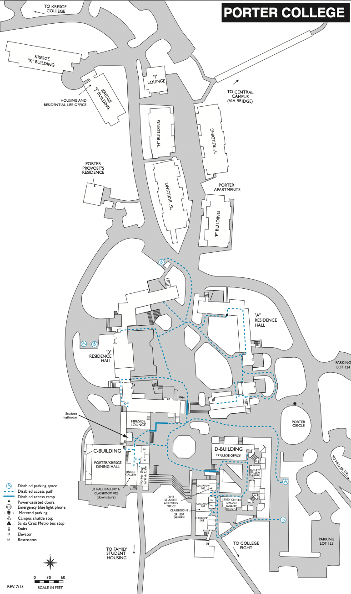

📊 Statistics
Porter’s dinning hall 54.5/100 (109/200)
Porter’s classes 64/100 (128/200)
Porter’s lounges 65.5/100 (131/200)
Porter’s quad 76.5/100 (153/200)
Porter’s scenery 82.5/100 (165/200)
Porter’s location 59.5/100 (119/200)

Student Testimonals
-
📌”The food is kinda okay. The ice cream machine they put in last year is honestly the reason I go in as often as I do now. The study rooms are kinda okay, but I like my room better. The walk to the library can occasionally be a hike, so sometimes I go, sometimes I don’t.”
-
📌”The library is not too far, so sometimes I’ll just go right after a trip to the dining hall.”
-
📌”The food is disastrous and could use work.”
-
📌”I like the people who work at the dining hall, but I think that the food could use work.”
-
📌”It gets a bad rep, but I think the food here is pretty okay. It’s kinda cool just how close we are to the library compared to some of the other colleges, but I gotta admit the library is just a bit too far some days.”